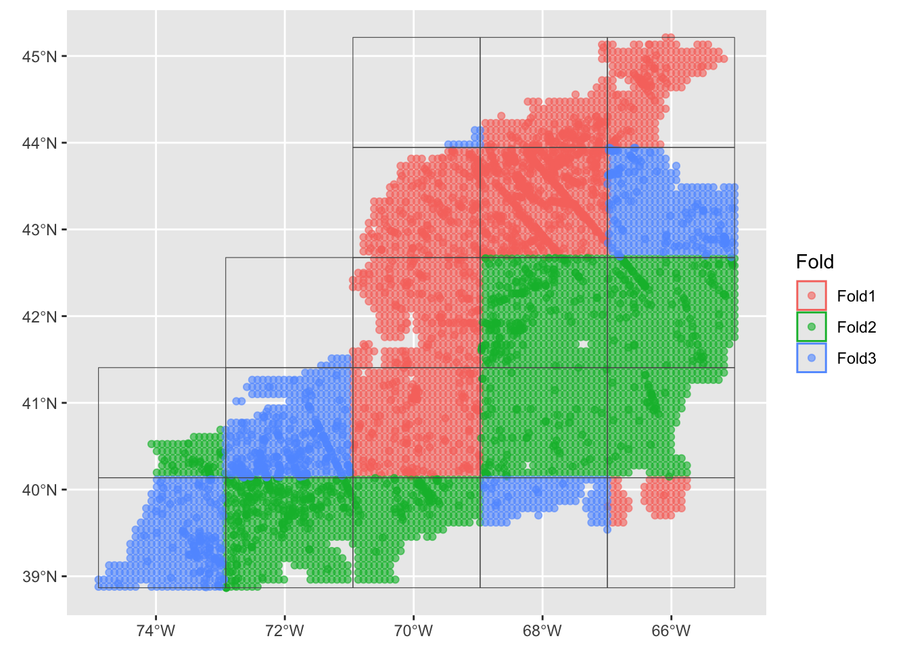
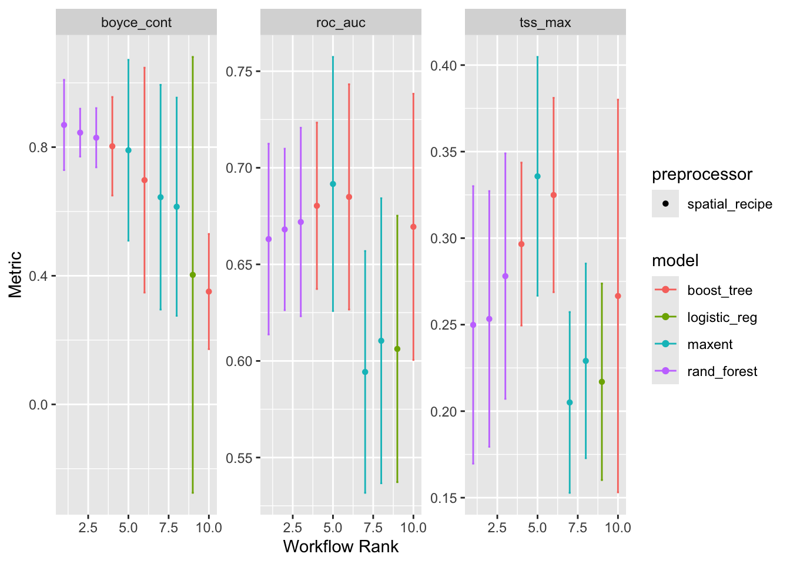
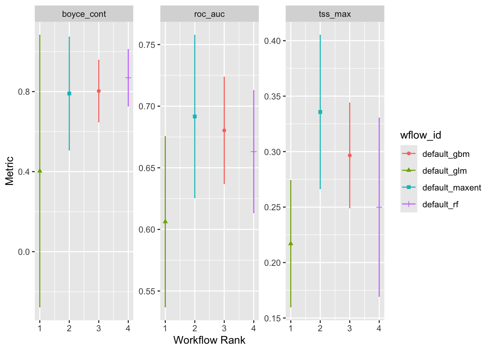

source("setup.R")Modeling
- There are no passengers on spaceship earth. We are all crew.
- Marshall McLuhan
Modeling starts with a collection of observations (presence and background for us!) and ends up with a collection of coeefficients that can be used with one or more formulas to make a predicition for the past, the present or the future. We are using modeling specifically to make habitat suitability maps for select species under two climate scenarios (RCP45 and RCP85) at two different times (2055 and 2075) in the future.
Models can be used in isolation, or they can be used in combinations, called ensembles. When working with ensembles, we are chosing to create two or more models. When we use that ensemble to make a prediction, each model produces its own prediction and then we combine them (usually something like the average.)
1 Setup
As always, we start by running our setup function. Start RStudio/R, and relaod your project with the menu File > Recent Projects.
2 Load data - choose a month and sampling approach
Let’s load what we need to build a model for August using the greedy sampling technique. We’ll also need the model configuration (which is “g008”). And we’ll need the covariate data.
model_input = read_model_input(scientificname = "Mola mola",
approach = "greedy",
mon = "Aug")
cfg = read_configuration(version = "g_Aug")
db = brickman_database()
depth = read_brickman(db |> filter(scenario == "STATIC", var == "depth"))
covars = read_brickman(db |> filter(scenario == "PRESENT", interval == "mon"))Of course we need covariates for August only, for this we can use a function we prepared earlier, prep_model_data().
variables = prep_model_data(model_input, month = "Aug",
covars = covars, depth = depth)
variablesSimple feature collection with 7272 features and 8 fields
Geometry type: POINT
Dimension: XY
Bounding box: xmin: -74.89169 ymin: 38.8678 xmax: -65.02004 ymax: 45.21401
Geodetic CRS: WGS 84
# A tibble: 7,272 × 9
class MLD Sbtm SSS SST Tbtm U V
<fct> <dbl> <dbl> <dbl> <dbl> <dbl> <dbl> <dbl>
1 presence 5.17 35.0 31.6 23.3 7.50 -0.00161 -0.00340
2 presence 4.25 32.8 30.6 21.6 8.15 -0.00420 -0.00206
3 presence 4.64 34.0 30.7 20.2 7.05 0.00168 0.00148
4 presence 5.58 34.6 30.7 18.8 7.55 0.00267 -0.000410
5 presence 5.04 34.7 30.7 19.0 7.43 -0.00619 -0.00121
6 presence 4.01 32.4 30.6 22.0 8.22 -0.00344 -0.000859
7 presence 4.10 32.9 30.5 21.8 8.34 -0.00565 -0.00226
8 presence 3.82 32.4 30.3 18.2 3.56 -0.00702 -0.00431
9 presence 3.20 32.4 30.6 17.9 5.73 0.000275 -0.00101
10 presence 4.02 32.9 30.6 22.0 8.62 -0.000900 -0.00148
# ℹ 7,262 more rows
# ℹ 1 more variable: geom <POINT [°]>3 Set up subsampling
We shall set up spatial cross-folds for our data so that we can have the model run repeatedly (without a lot of effort). Spatial cross-folds are just subsamples of the input data set. They are easy to make, and easy to understand with a map.
crossfolds <- spatial_block_cv(data = variables,
v = 3,
n = 5)
autoplot(crossfolds)
You can see that the domain is cut into a 5 x 5 grid with each grid cell assigned to one of three groups (“folds”) randomly. Cross-folds can have varying numbers of points.
4 Building the ensemble of models
Now we have all we need to build a model. We first make what is called a recipe… it’s just a placeholder. Then we build a work flow where we specify the types of models we want along with the crossfold sampling.
4.1 Make a recipe
A recipe at a bare minimum needs to know two things: what is that data it has to work with and what is the relationship among the variables. The latter is expressed as a formula, very similar to how we specify the formula of a line with y = mx + b or a parabola y ~ ax^2 + bx + c.
Note
We often think of formulas as left-hand side (LHS) and right-hand side (RHS) equalities. And usually, the LHS is the outcome while the RHS is about the inputs. For our modeling, the outcome is to predict the across the entire domain. We can generalize the idea with the “is a function of” operator ~ (the tilde). For yhe classic formula for a line it like this… y ~ x.
Consider a situation where we have reduced all of the suitabke variables to Sbtm, Tbtm, MLD andXbtm, which we have in a table along with a class variable. In our case we have the outcome is an prediction of class it is a function of variables like Sbtm, Tbtm, MLD, Xbtm, etc. This formula would look like y ~ Sbtm + Tbtm + MLD + Xbtm. Unlike the specific equation for a line or parabola, we don’t pretend to know what coefficients, powers and that sort of stuff looks like. We are just saying that class is a function of all of those variables (somehow).
In the case where table where the outcome (class) is a function of all other variables in the table, we have a nice short hand. class ~ . where the dot means “every other variable”.
Below we make a recipe which is like template. We provide the table of variables (with spatial info) - techinally we need only need to provide one row as it is building a template, it doesn’t store the data (yet). We also provide the formula which we read as “class as a funtion of everything else”. The recipe() knows detects the geometry column and handles that specially.
aug_recipe = recipe(variables, formula = class ~ .)
aug_recipe── Recipe ──────────────────────────────────────────────────────────────────────── Inputs Number of variables by roleoutcome: 1
predictor: 7
coords: 24.2 Make a workflow set
Here’s where we specify which model(s) we want, and that we want them to be treated as an ensemble rather than as a individual models.
models <-
# create the workflow_set
workflow_set(
preproc = list(default = aug_recipe),
models = list(
# the standard glm specs - no tuneable parameters available
glm = sdm_spec_glm(),
# rf specs with tuning
rf = sdm_spec_rf(),
# boosted tree model (gbm) specs with tuning
gbm = sdm_spec_boost_tree(),
# maxent specs with tuning
maxent = sdm_spec_maxent()
),
# make all combinations of preproc and models,
cross = TRUE ) |>
# tweak controls to store information needed later to create the ensemble
option_add(control = control_ensemble_grid())We have chosen these 4 models types to be memebers of our ensemble because they are common models types used for species distribution models. We aren’t limited to these, but we will use these for the tutorial.
When we print the models object we see that it, too, is a table, but some of it’s columns are list types, and some have empty elements. That’s because we still have not actually modeled anything… we are still in the building phase.
models# A workflow set/tibble: 4 × 4
wflow_id info option result
<chr> <list> <list> <list>
1 default_glm <tibble [1 × 4]> <opts[1]> <list [0]>
2 default_rf <tibble [1 × 4]> <opts[1]> <list [0]>
3 default_gbm <tibble [1 × 4]> <opts[1]> <list [0]>
4 default_maxent <tibble [1 × 4]> <opts[1]> <list [0]>4.3 Auto-tuning the ensemble models
Now we can allow the underlying software to run multiple times as it looks to optimize the different parameters that each model has (if the model has tuneable parameters). Here we ask for the software iterate over the crossfolds sampling set for each model in the ensemble. We then request the standard diagnostics metrics used in species distribution modeling:Boyce’s Continuous Index, the area under the Receiver Operator Curve (auc), and True Skills Statistic (tss).
Depending upon the complexity of your set up this can take a while. We no longer are working with a template, but rather with full-blown datasets.
models <- models |>
workflow_map("tune_grid",
resamples = crossfolds,
grid = 3,
metrics = sdm_metric_set(),
verbose = TRUE)i No tuning parameters. `fit_resamples()` will be attemptedi 1 of 4 resampling: default_glm✔ 1 of 4 resampling: default_glm (609ms)i 2 of 4 tuning: default_rfi Creating pre-processing data to finalize unknown parameter: mtry✔ 2 of 4 tuning: default_rf (42.3s)i 3 of 4 tuning: default_gbmi Creating pre-processing data to finalize unknown parameter: mtry✔ 3 of 4 tuning: default_gbm (31.5s)i 4 of 4 tuning: default_maxent✔ 4 of 4 tuning: default_maxent (13.7s)We get some messages as it processes, but it is hard for the novice to know what they mean, but at least they aren’t error messages. But we can print the updated models and compare to what we had before.
models# A workflow set/tibble: 4 × 4
wflow_id info option result
<chr> <list> <list> <list>
1 default_glm <tibble [1 × 4]> <opts[4]> <rsmp[+]>
2 default_rf <tibble [1 × 4]> <opts[4]> <tune[+]>
3 default_gbm <tibble [1 × 4]> <opts[4]> <tune[+]>
4 default_maxent <tibble [1 × 4]> <opts[4]> <tune[+]>We can see that there is more information in there than there was before. Note that the result for default_glm is labeled differently than the others; that’s because that particular model doesn’t have any tuneable parameters so the software couldn’t tune anything.
4.4 Ensemble model metrics
Let’s plot the models in the ensemble, which will reveal some of the diagnostic metrics.
autoplot(models)
Notice that there are three replicates for each model except for logistic_reg which is the glm that had no tuneable parameters. Also note that the order they are represented in each plot is established by the order of the first plot and then carried through to the others. We can probably agree by examining the left hand plot, that the maxent model has the highest Boyce Continuous Index which means it’s rank is 1. Confusingly higher rank values means lower performance; maybe we should think of it a “first place”.
But what decides that Boyce Continuous Index should be allowed to establish the order? It’s just alphabetical order! To be frank, the workflow rank is not all that meaningful.
At this point we can decide of we are satisfied with how the individual models perform with the crossfolds. If we found them lacking we could go back to add or remove models, adjust our sampling scheme, change the covariate selection or anything else we felt might improve the performance. We won’t do that now, but we’ll accept the tuned parameters “as is” and push ahead.
4.5 Establish the ensemble
Now we come to point we make a leap and build the actual ensemble - this is the thing we shall be able to use to make predictions. We only need to specify which of the metrics to preferentially use when selecting the optimized parameters. Are you ready for this?
ensemble <-
simple_ensemble() |> # make an empty ensemble
add_member(models, metric = "boyce_cont") # populate itThat’s it - tahdah! We’re done! We can plot it.
autoplot(ensemble)
Notice that we are no longer looking at the crossfold replicates but instead we are looking at summary of the individual models run on the complete data sets. Again, “Workflow Rank” in an arbitrary order. We can see that maxent performs well on all of the metrics, but Random Forests and Boosted Regression Trees are pretty good, too. The Generalize Linear Model seems to be the odd one out, which isn’t to say that it doesn’t work.
We can also pull out a table of these metric results.
ensemble |>
collect_metrics()# A tibble: 12 × 5
wflow_id .metric mean std_err n
<chr> <chr> <dbl> <dbl> <int>
1 default_glm boyce_cont 0.403 0.412 3
2 default_glm roc_auc 0.606 0.0419 3
3 default_glm tss_max 0.217 0.0345 3
4 default_rf boyce_cont 0.869 0.0854 3
5 default_rf roc_auc 0.663 0.0300 3
6 default_rf tss_max 0.250 0.0488 3
7 default_gbm boyce_cont 0.803 0.0932 3
8 default_gbm roc_auc 0.680 0.0262 3
9 default_gbm tss_max 0.297 0.0286 3
10 default_maxent boyce_cont 0.790 0.171 3
11 default_maxent roc_auc 0.692 0.0400 3
12 default_maxent tss_max 0.336 0.0420 3Useful, but prettier as a plot!
5 Saving an ensemble for later use
We can save the ensemble to load back in later, we just need to provide the version information.
write_ensemble(ensemble, version = "g_Aug")6 Recap
We have built an ensemble of 4 models using a recipe and workflow. Models were partially designed using variables we selected in an earlier step. We allowed the model building process to “self-tune” by dividing the sample set into multi-folds which are orderly subsamples of our input data usually call “cross-folds”. We then looked at some diagnostic metrics to help us understand model performance, before building an ensemble of models. We saved the ensemble of models for restoring later.
Coding Assignment
Prepare and save an ensemble for each month for both “greedy” and “conservative” sampling approaches.